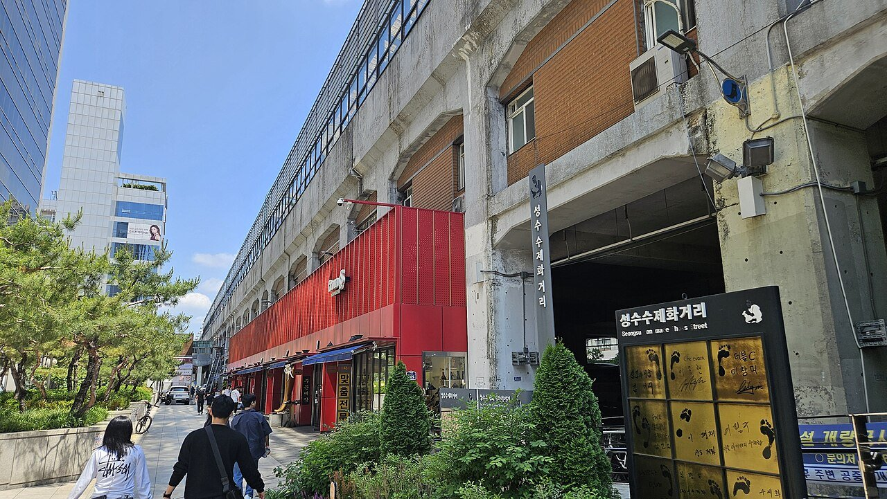
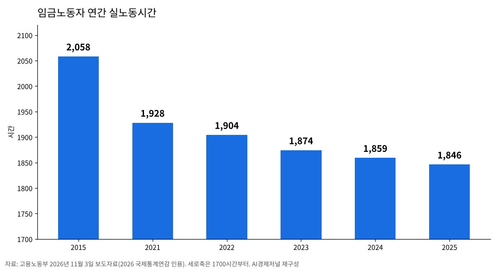
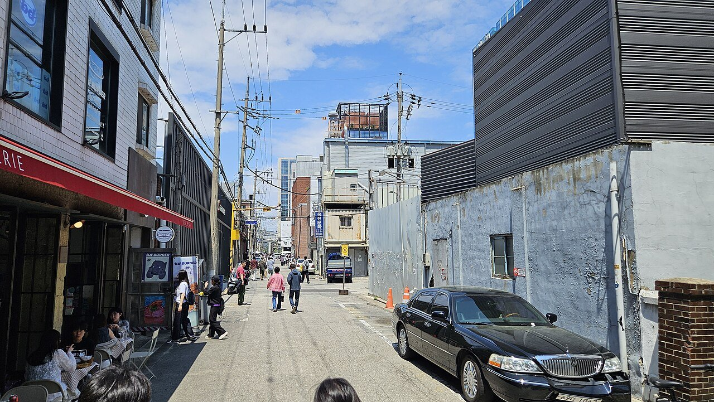

청년 많이 일하는 100곳, 장시간 노동·공짜 야근 감독 받는다
성수동 집중 점검, 특별연장근로 사업장은 안전까지
AI경제저널=김갑봉 기자 | 고용노동부가 3일부터 전국 100개 사업장을 대상으로 하반기 장시간 노동 기획감독을 시작했다. 청년을 많이 고용한 사업장의 장시간 노동과 수당 미지급, 이른바 공짜 야근이 첫 표적이다. 정보통신업, 전문·과학·기술서비스업, 숙박·음식점업, 도소매업이 중심이다.
감독에서 법 위반이 확인되면 시정지시와 과태료, 사법처리가 뒤따른다. 고용노동부는 근로기준과 산업안전보건 두 분야를 함께 본다고 밝혔다.

국정감사가 짚은 성수동, 집중 점검
이번 감독은 지난달 13일 고용노동부 국정감사에서 나온 지적을 받았다. 청년 노동자의 수당 미지급과 상시적인 초과근무가 문제로 올랐다. 특히 서울 성동구 성수동 일대 청년 노동자의 장시간 노동과 공짜 야근이 거론됐다.
고용노동부는 이 점을 고려해 성동구 소재 사업장을 집중 점검한다. 근로시간 한도를 지켰는지, 연장·야간·휴일근로수당을 제대로 줬는지를 살핀다.
근로기준법 제53조는 당사자가 합의해도 연장근로를 1주 12시간까지만 허용한다. 제56조는 연장·야간·휴일근로에 통상임금의 100분의 50 이상을 더해 주도록 정한다.
특별연장근로 사업장은 산업안전까지
특별연장근로를 반복해 쓰는 사업장은 노동과 산업안전을 함께 점검한다. 특별연장근로는 주 12시간 한도를 넘겨 일하게 하는 제도다. 특별한 사정이 있을 때 고용노동부 장관 인가와 노동자 동의를 받아야 한다.
이때 사용자는 건강검진이나 휴식시간 같은 건강 보호 조치를 해야 한다. 감독반은 인가받은 시간을 지켰는지와 이 조치가 제대로 이뤄졌는지를 본다. 국정감사에서도 특별연장근로 인가 사업장의 산업재해 예방과 건강 보호 관리가 필요하다는 지적이 나왔다.
실노동시간은 줄었지만
고용노동부가 인용한 국제통계연감을 보면 임금노동자의 연간 실노동시간은 2015년 2058시간이었다. 2021년 1928시간, 2023년 1874시간을 거쳐 2025년 1846시간으로 줄었다.

평균은 줄었어도 일부 사업장의 사정은 다르다. 고용노동부는 올해 2월부터 약 두 달간 포괄임금 오남용 기획감독을 했다. 대상은 청년 다수 고용 사업장 101곳이었다. 포괄임금을 쓰는 것으로 확인된 곳은 79곳, 연장·휴일·야간근로수당을 주지 않은 곳은 34곳이었다.
적발 사례 가운데 한 소프트웨어 업체는 실제 근로시간을 확인하지 않고 고정 시간외수당(고정OT)만 줬다. 노동자 14명이 고정OT를 넘겨 일한 수당 2500만원을 받지 못했다.
익명신고 제보 세 배로
현장의 제보도 늘었다. 고용노동부는 2023년 2월부터 온라인 「포괄임금·고정OT 오남용 익명신고센터」를 운영한다. 올해 1~8월 제보는 260건으로 전년 같은 기간 98건의 세 배 가까이 됐다.
5월 14일부터는 권역별 릴레이 감독이 이어졌다. 서울 구로·가산디지털단지와 성남 판교테크노밸리, 창원국가산단을 거쳐 서울 중구·영등포구 금융업, 대전·청주 지식서비스업체까지 다섯 차례다. 9월 15일부터는 하반기 포괄임금 기획감독이 약 두 달 일정으로 진행 중이다. 제보가 잦았던 제조업, 정보통신업, 전문·과학·기술서비스업이 중심이다.
김영훈 고용노동부 장관은 "일한 만큼 정당하게 보상받고, 충분히 쉬면서 건강하게 일할 수 있는 노동환경을 만드는 것이 중요하다"고 말했다. 고용노동부는 감독과 함께 사업장 스스로 근로시간 관리체계와 근무체계를 고치도록 이끌 방침이다.

참고문헌
- "청년 노동자의 장시간·공짜 노동 근절을 위한 장시간 노동 기획감독 실시", 고용노동부, 2026.11.3., https://www.korea.kr/briefing/pressReleaseView.do?newsId=156787696
- "공짜 노동 근절을 위한 하반기 포괄임금 오남용 기획 감독 실시", 고용노동부, 2026.9.15., https://www.korea.kr/briefing/pressReleaseView.do?newsId=156781700
- "대전·청주지역 지식서비스업체 대상 포괄임금 오남용 5차 릴레이 감독 실시", 고용노동부, 2026.8.21., https://www.korea.kr/briefing/pressReleaseView.do?newsId=156775082
- "공짜 노동 근절을 위한 포괄임금 오남용 1차 기획감독 결과 발표", 고용노동부, 2026.5.28., https://moel.go.kr/news/enews/report/enewsView.do?news_seq=19447
- "근로기준법"(제53조·제56조), 국가법령정보센터, https://www.law.go.kr/법령/근로기준법
[사진 출처]
- [사진 1·2] 위키미디어 공용, Aspere, 「성수수제화거리 260523 04」 「성수동 260523 08」(CC0, 2026년 5월 23일 촬영)
- [도표 1] AI경제저널 작성. 자료 고용노동부 보도자료(2026 국제통계연감 인용)
※ 이 기사는 AI 프로그램 클로드를 활용해 작성했습니다.
관련기사
- [10차 개헌과 지방분권①] 39년 만의 개헌 시도, 지방자치 조항은 그대로였다
- 누적 수출 9000억 달러 첫 돌파…인천 비중은 5.1%로 낮아져
- 인천신용보증재단, 소상공인 495억원 협약보증 2일부터 접수
- [농업 브리핑] 남는 쌀 1.9%에 벼 감산, 20년 새 30% 줄어든 논의 홍수·식량 기능
저작권자 © AI경제저널 무단전재 및 재배포, AI학습 및 활용 금지